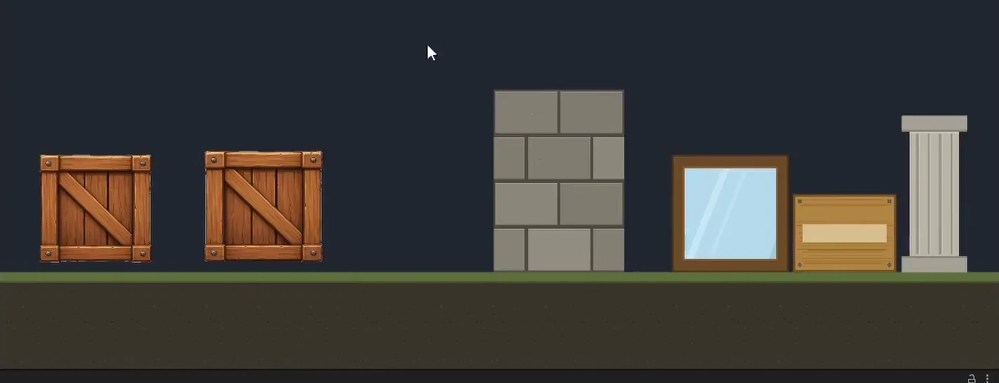
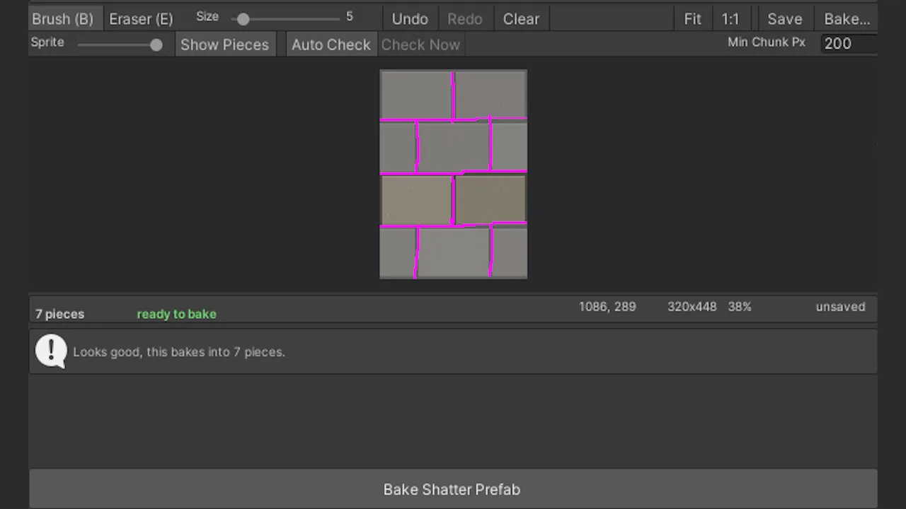
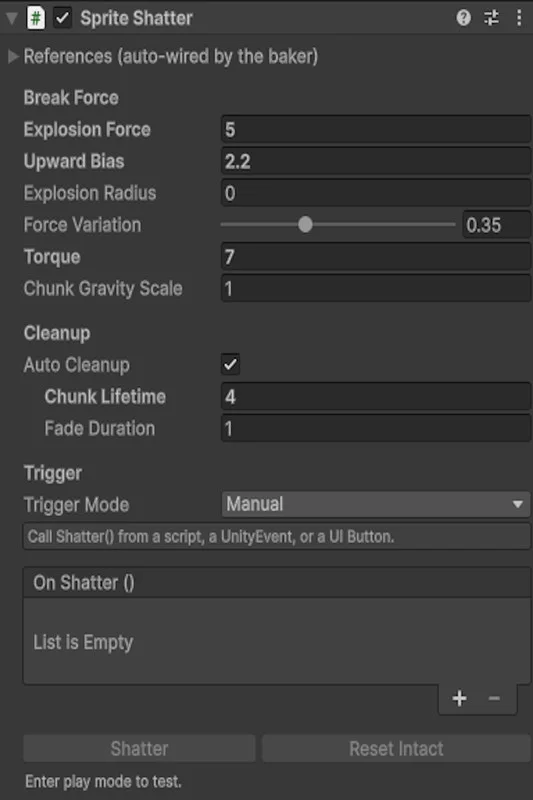

Tools — 01 — Unity Asset Store, 2026
Crack Painter 2D
A Unity editor tool that breaks a 2D sprite along crack lines you paint yourself.
- My role
- Design, code, documentation and the listing — solo
- Shipped
- v1.0.0 — 24 August 2026
- Built with
- Unity 2022.3, C# — Built-in, URP and HDRP
- Store
- Unity Asset Store — Tools / Sprite Management
- Licence
- €13.80 — Extension Asset, full C# source
- Package
- 1.4 MB, no dependencies, demo scene of six objects

The problem
What a generator offers
- Patterns
- Grid, hexagonal, radial, triangular, Voronoi
- Knows
- The silhouette of the sprite
- Does not know
- What the sprite depicts
Every 2D shatter tool I could find generates its fragments procedurally. That is fine for glass, and wrong for almost everything else: a crate splinters into diamonds instead of coming apart along its planks, and a stone wall breaks straight through the blocks instead of around the mortar. The sprite is drawn by someone who decided where its seams are, and then the break ignores them.
Crack Painter 2D moves that decision back to the person who drew the thing. You paint the crack lines onto the sprite, in Unity, and the break follows them exactly. Everything else in the tool exists to make that one act cheap enough to be worth doing.
What I did
Design, code, docs & listing — solo
-
Authoring
The crack map is an ordinary PNG
The pattern lives in a same-size image beside the sprite, painted in magenta, and the tool ships an editor for it: hard brush and eraser, straight-line mode, brush size, zoom, pan, undo and redo. Because it is only a PNG, nobody is locked into my editor — open it in Photoshop halfway through if that is faster, then come back and bake. The brush also opens at a size scaled to the sprite, so it is not a hairline on a 1024 px wall or a slab on a 32 px crate.
-
Feedback
Making the one invisible failure visible
A crack only separates a piece if it runs unbroken from one edge of the sprite to another, or closes a loop. A line that stops one pixel short looks finished and silently does nothing — and you only find out after a bake. So the editor runs the baker’s own flood fill after every stroke: freed pieces turn grey, lines that separate nothing are tinted red, and the status bar counts the pieces you would get right now.
-
Runtime
The break stays tunable after the bake
Force, upward bias, blast radius, per-chunk variation, torque and gravity are all runtime values on the component, not decisions frozen into the prefab. One baked object can crumble under a footstep and detonate under a rocket, and a designer can find the difference on the slider rather than by asking me to bake it again.
-
Shipping
Everything around the code
Preflight checks for the ways a bake goes wrong, a demo scene with six pre-baked objects, documentation, the store page, the key image, the guide video, and the submission itself. This is the part a student project never teaches you: the tool was working long before it was something a stranger could buy and use without me in the room.
Sole author and publisher. The demo art in Demo/Art/ is generated illustrative content, declared as such on the listing, and can be deleted without affecting the tool.
01 — the crack map
In the window
- Draw
- Brush, eraser, straight lines, adjustable size
- Navigate
- Zoom, pan, Fit, 1:1
- Undo
- Full history, and Clear
- Show Pieces
- Greys out everything already free
- Auto Check
- Re-runs the flood fill after every stroke
- Min Chunk Px
- Ignores specks left between cracks
You can see whether a crack actually cuts
This is the feature the tool is really about. Painting cracks is easy; knowing whether you painted them correctly is not, because the failure is a single missing pixel and the artwork looks perfect either way.
Rather than explain the rule in the documentation and let people trip over it, I put the answer on screen continuously. The editor calls the same flood fill the baker will call, on every stroke, and reports the piece count it would produce. The bake-and-check loop that a tool like this normally forces on you simply is not there.
The status line does the rest of the work: piece count, whether it is ready to bake, the cursor position, the sprite’s dimensions, the zoom, and whether the map has unsaved changes. Nothing about the state of the job is hidden behind a menu.

02 — the bake
What one click does
- Cuts
- Deletes the painted pixels from the sprite
- Fills
- Flood-fills what is left into separate regions
- Bakes
- Each region to a sprite of its own
- Assembles
- A prefab with colliders, rigidbodies and the component wired up
- Inherits
- Sorting layer, sorting order and pixels per unit from the source
- Colliders
- Trace each chunk’s generated physics shape
The output is a plain Unity prefab
There is no runtime magic and no proprietary asset type. What comes out of the baker is SpriteRenderers, Physics 2D colliders and rigidbodies, arranged under one root — so it drops into whatever sorting, materials and layers a project already uses, and anyone can open it up and see what it is made of.
That was a deliberate constraint rather than a shortcut. A tool that produces ordinary engine objects can be understood, edited and thrown away by its user; one that produces its own special thing has to be trusted. Re-baking regenerates in place, so changing your mind about the pattern costs one click, not a cleanup.
03 — Shatter()
Break force
- Explosion Force
- Outward impulse from the origin of the blast
- Upward Bias
- Extra lift, so pieces pop rather than slide
- Explosion Radius
- 0 gives every chunk full force; above 0 it falls off
- Force Variation
- Randomises per chunk, so the break is not uniform
- Torque
- Random spin per chunk
- Chunk Gravity Scale
- How the pieces fall once free
What sets it off
- Manual
- Code, a UnityEvent, a UI button, an animation event
- On contact
- Collision or trigger, with a required tag and a minimum impact speed
- On break
OnShatterfires for SFX, particles, score, shake- Undo
ResetIntact(), for pooling and retries
One prefab, many kinds of break
The pattern is fixed at bake time. The force is not. Keeping those two things separate is what makes a single baked object worth authoring: the same crate can be nudged apart by a player walking into it and blown across the screen by an explosion, and the difference is six numbers on a component.
The triggers matter for the same reason. If breaking something requires writing a script, the tool belongs to programmers; if it can be fired from a UnityEvent, a UI button, an animation event or a collision with a tag and a speed threshold, a designer can build a breakable object end to end without opening the code. The component carries its own Shatter and Reset Intact buttons as well, so a break can be tried in play mode before any trigger for it exists.

Shatter()
Everything the baker wired up, and everything left for the designer to turn
In motion
The demo scene
- Ships with
- Six pre-baked objects: crate, long crate, wall, window, sign, pillar
- Zone A — space
- Shatter fired straight from code
- Zone B — click
- Launches a ball; the wall breaks where it lands
- Zone C — press C
- A sequence, several objects at once
What it looks like running
The demo is three zones because there are three ways someone will want to set a break off, and a demo scene that only shows one of them answers the wrong question.
The line I drew
Deliberately not
- Runtime damage
- No — the pattern is fixed at bake time
- Bullet holes
- No — nothing is carved where a shot lands
- Erosion
- No — sprites are not worn away pixel by pixel
- Swipe cutting
- No — the line cannot be chosen at runtime
The listing says all of this in as many words, and points people at a destructible-sprite asset if that is what they actually need.
What it refuses to do
The pattern is authored ahead of time, which means the tool costs you a few minutes per sprite. That is a real price, and it buys something specific: objects that break the way they were drawn to break. It is worth paying on a boss, a set-piece wall or a puzzle element, and not worth paying on a hundred background props.
So the listing says so. There is a section on the store page headed What this is not, and it sends anyone who needs arbitrary runtime cutting to buy something else. Refunds and one-star reviews come from tools sold into the wrong problem, and the cheapest place to prevent that is the page someone reads before paying.
Next version: procedural pattern generation — Voronoi, and grid or planks — written into the crack map as a single undo step. Not to replace the painting, but to give you a starting pattern you then correct where it matters.
How it was built
Declared on the listing
- Code
- Written partly with Claude, partly by hand — reviewed, edited and tested before release
- Demo art
- Generated with ChatGPT; illustrative content, not sold as art
- At runtime
- No AI service, no API key, no subscription — plain C# and Physics 2D, offline
AI in the pipeline, and said out loud
I work with models the way I work with any tool in the pipeline, and I put my name on the result. On something people pay for, that means two things: reading and testing every generated line before it ships, and declaring the arrangement on the listing rather than hoping nobody asks.
It also means shipping full, readable C# source, so the claim is checkable. A buyer does not have to take my word for what is in the package — they can open it. That is the only version of this disclosure that is worth anything.
The name causes one predictable confusion, so the listing settles it too: “Painter” is the thing you do with the brush, not a claim about how the package was produced.